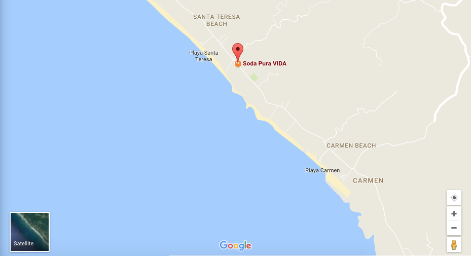
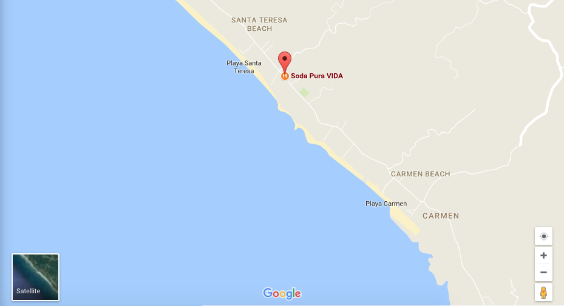

Accomodation
The Lomani Island Resort features a 7-km private beach, and has timber decks with spectacular ocean views. Guests enjoy free use of snorkeling equipment, bicycles, stand up paddle boards, windsurfers and glass bottomed kayaks. Facilities include a fitness centre, billiards table, restaurant and a 35-metre freshwater swimming pool. Adults only.
At Malolo Island Resort you will find golden sandy beaches, coral reefs and coconut palms. Enjoy access to a swimming pool, 3 restaurants and 3 bars. Nadi is 28 km from the resort. Set amongst tropical gardens, the beautiful plantation-style bures on at Malolo Island Resort each have vaulted ceilings and full or partial sea views. There is an en suite bathroom, a verandah, refrigerator in each accommodation type and both beach towels and daily housekeeping are provided.
Overlooking a sandy private beach, Tokoriki Island Resort boasts a day spa, an outdoor pool and 2 restaurants. It offers bures and villas with a private patio and amazing ocean views. Tokoriki Island Resort Fiji is located on a secluded island 35 km off the west coast of Nadi. Nadi International Airport is a 15-minute flight away, and Port Denarau is 1 hour away by boat.


 
